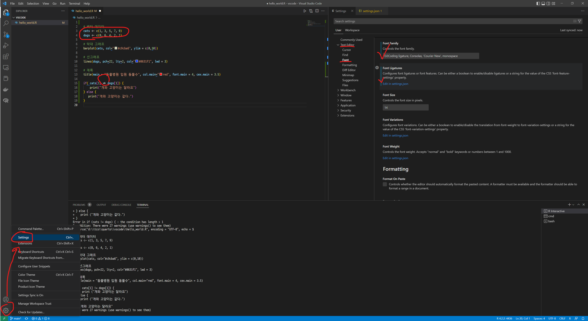

R extension을 설치하게 되면 VS Code에서 R 코드 개발을 원활히 할 수 있도록 지원한다. VS Code 에 필수적인 R extension은 다음을 꼽을 수 있다. R extension을 설치하면 RStudio에서 기본설정으로 지정된 단축키를 별도 설정없이 자동 지정되기 때문에 편리하다.
VS Code 좌측 하단 톱니바퀴 Settings 설정을 클릭 혹은 메뉴에서 “File” → “Preferences” → “Settings”를 통해 편집기 (Text Editor)로 들어가 운영체제에 설치한 코딩 폰트를 지정한다. Font Ligatures 도 true로 설정한다. 이를 통해 < - 표시가 &larra; 로 화면에 표현된다.

D2코딩 글꼴 장착
단축키
R 코드 개발을 진행할 때 %>% , ← 두가지 기능이 가장 많이 사용되는 단축키로 RStudio에서는 기본으로 지원되고 있다. VS Code에서 자주 사용되는 단축키를 CTRL + Shift + m , Alt + - 를 적용시키는 방법을 살펴보자.
$ pandoc --versionpandoc 2.19.2Compiled with pandoc-types 1.22.2.1, texmath 0.12.5.2, skylighting 0.13,citeproc 0.8.0.1, ipynb 0.2, hslua 2.2.1Scripting engine: Lua 5.4User data directory: C:\Users\statkclee\AppData\Roaming\pandocCopyright (C) 2006-2022 John MacFarlane. Web: https://pandoc.orgThis is free software; see the source for copying conditions. There is nowarranty, not even for merchantability or fitness for a particular purpose.
keybindings.json
keybindings.json 파일에 R 혹은 파이썬 코드를 삽입시킬 수 있는 키보드 단축키를 등록시킨다.
.Rmd 파일을 CTRL + Shift + k 단축키로 컴파일시키면 .html 파일이 생성된다. .html 파일 결과를 직접 실시간으로 확인하고자 한다면, 마이크로소프트가 개발한 Live Preview - VS Code Extension 플러그인을 설치한다.
GitHub copilot
GitHub에서 공개한 Copilot은 AI pair programmer라는 부제를 달고 있고, GitHub Copilot 플러그인을 설치하면 사용이 가능하다. 한가지 CTRL + Enter 단축키가 충돌되어 R 코드 실행하는 것과 겹쳐서 문제가 있기 때문에 단축키를 CTRL + Shift + Alt + Enter 와 같이 조정하면 큰 문제 없이 R 개발할 때 GitHub copilot과 함께 사용이 가능하다. 이를 위해서 keybindings.json 파일에 다음 사항을 추가한다. 사용자별로 단축키를 달리해서 적용시키는 것도 물론 가능하다.
---title: "Visual Studio Code"description: "비쥬얼 스튜디오 코드 IDE를 사용하여 개발 생산성을 높인다."categories: [IDE, vscode, copilot, chatGPT]date: '2023-01-26' # 날짜 설정: now, last-modifiedauthor: - name: 이광춘 url: https://www.linkedin.com/in/kwangchunlee/ affiliation: 한국 R 사용자회 affiliation-url: https://github.com/bit2rimage: '../../images/vscode_R_extension.png'---# 환경설치 방법1. R을 설치한다.2. `languageserver` 패키지를 설치한다. - `install.packages("languageserver")`3. Visual Studio Code 에서 `R extension`을 설치한다.4. `.R` 파일에 개발을 시작한다.## `R extension` 설치`R extension`을 설치하게 되면 VS Code에서 R 코드 개발을 원활히 할 수 있도록 지원한다. VS Code 에 필수적인 `R extension`은 다음을 꼽을 수 있다. `R extension`을 설치하면RStudio에서 기본설정으로 지정된 단축키를 별도 설정없이 자동 지정되기 때문에 편리하다.- [R - REditorSupport](https://marketplace.visualstudio.com/items?itemName=REditorSupport.r)- [R Markdown All in One](https://marketplace.visualstudio.com/items?itemName=TianyiShi.rmarkdown)- [Quarto](https://marketplace.visualstudio.com/items?itemName=quarto.quarto)- [R Debugger](https://marketplace.visualstudio.com/items?itemName=RDebugger.r-debugger)## 헬로우 월드`R Extension` 설치되면 코드 창 상단에 실행버튼이 활성화되고 <kbd>Ctrl</kbd> + <kbd>Enter</kbd> 혹은 <kbd>Ctrl</kbd> + <kbd>Shift</kbd> + <kbd>Enter</kbd>## 유튜브 동영상{{< video https://youtu.be/c3ZQ8-OYj2M >}}# 코딩 글꼴다른 언어와 마찬가지로 R 코드로 데이터 과학 제품을 개발할 경우 글꼴도 코딩에 적합한 한글 글꼴을 설정한다.먼저 [D2 Coding 글꼴](https://github.com/naver/d2codingfont)을 다운로드 받아 운영체제에 설치한다.VS Code 좌측 하단 톱니바퀴 <kbd> Settings </kbd> 설정을 클릭 혹은 메뉴에서 "File" → "Preferences" → "Settings"를 통해 `편집기 (Text Editor)`로 들어가 운영체제에 설치한 코딩 폰트를 지정한다. **Font Ligatures** 도 `true`로 설정한다. 이를 통해 `< -` 표시가 &larra; 로 화면에 표현된다.# 단축키R 코드 개발을 진행할 때 <kbd> %>% </kbd>, <kbd>←</kbd> 두가지 기능이 가장 많이 사용되는 단축키로 RStudio에서는 기본으로 지원되고 있다. VS Code에서 자주 사용되는 단축키를 <kbd> CTRL </kbd> + <kbd> Shift </kbd> + <kbd> m </kbd>, <kbd> Alt </kbd> + <kbd> - </kbd> 를 적용시키는 방법을 살펴보자.만약 VS Code에서 단축키 설정 기능을 활용한다. [[How to add R {magrittr}'s %>% Pipe Operator in VSCode as Keyboard Shortcut](https://www.programmingwithr.com/how-to-add-r-magrittr-s-pipe-operator-in-vscode-as-keyboard-shortcut/)]{.aside}- 윈도우즈: File > Preferences > Keyboard Shortcuts. - 맥: Code > Preferences > Keyboard Shortcuts`keybindings.json` 파일에 <kbd> %>% </kbd>, <kbd>←</kbd> 단축키 기능을 추가한다.# 패널RStudio는 코딩기반 데이터 분석과 통계에 최적화된 개발환경이다. 즉, 편집기 패널, 콘솔/터미널 패널, 그래프 패널, 도움말/개발 패널로 구성된 꼭 필요한 패널만 구성되어 있다. ::: {.panel-tabset}### 패널 설정 ### 설정 후:::# `.qmd`, `.Rmd` literate programming을 구현한 `.qmd`, `.Rmd` 파일를 작성하여 다양한 데이터 과학 문서를 작성할 수 있다.[**Pandoc** a universal document converter](https://pandoc.org/installing.html) 웹사이트에서`pandoc`을 설치해야 한다. pandoc 최신버전을 설치하면 되고 버전이 2.16 이상이 되어야 활용이 가능하다.```{r}#| eval: false$ pandoc --versionpandoc 2.19.2Compiled with pandoc-types 1.22.2.1, texmath 0.12.5.2, skylighting 0.13,citeproc 0.8.0.1, ipynb 0.2, hslua 2.2.1Scripting engine: Lua 5.4User data directory: C:\Users\statkclee\AppData\Roaming\pandocCopyright (C) 2006-2022 John MacFarlane. Web: https://pandoc.orgThis is free software; see the source for copying conditions. There is nowarranty, not even for merchantability or fitness for a particular purpose.```## `keybindings.json``keybindings.json` 파일에 R 혹은 파이썬 코드를 삽입시킬 수 있는 키보드 단축키를 등록시킨다. [자료출처: [VS Code: Add a Rmarkdown Code Chunk Snippet Key Binding](https://www.schmidtynotes.com/blog/r/2021-09-28-vscode-rmd-code-chunk-snippet/)]{.aside}```json// Place your key bindings in this file to override the defaults[// keybindings for R scripts. {"key":"Ctrl+Shift+m","command":"type","args": { "text":" %>% " },"when":"editorTextFocus && editorLangId == r" }, {"key":"Alt+-","command":"type","args": { "text":" <- " },"when":"editorTextFocus && editorLangId == r" },// keybindings for Rmarkdown {"key":"Ctrl+Shift+m","command":"type","args": { "text":" %>% " },"when":"editorTextFocus && editorLangId == rmd" }, {"key":"Alt+-","command":"type","args": { "text":" <- " },"when":"editorTextFocus && editorLangId == rmd" },// keybindings for R terminal (radian included) {"key":"Ctrl+Shift+m","command":"workbench.action.terminal.sendSequence","args": { "text":" %>% " },"when":"terminalFocus" }, {"key":"Alt+-","command":"workbench.action.terminal.sendSequence","args": { "text":" <- " },"when":"terminalFocus" },// Insert R Code chunk {"key":"ctrl+alt+i"."command":"editor.action.insertSnippet","when":"editorTextFocus","args": {"snippet":"```{r}\n$0\n```"} }, {"key":"ctrl+alt+o"."command":"editor.action.insertSnippet","when":"editorTextFocus","args": {"snippet":"options(\n max.print=100,\n vsc.use_httpgd=TRUE,\n device='quartz'\n)"} }, {"key":"ctrl+alt+m","command":"editor.action.insertSnippet","when":"editorTextFocus","args":{"snippet":"---\ntitle: '$0'\nauthor: '이광춘'\ndate: '`r Sys.Date()`'\noutput:\n pagedown::html_paged:\n self_contained: true\n toc: false\n---\n\n```{r setup, include=FALSE}\nknitr::opts_chunk\\$set(\n echo = FALSE,\n message = FALSE,\n warning=FALSE\n)\n```" } },]```## HTML 미리보기`.Rmd` 파일을 <kbd> CTRL </kbd> + <kbd> Shift </kbd> + <kbd> k </kbd> 단축키로 컴파일시키면 `.html` 파일이 생성된다. `.html` 파일 결과를 직접 실시간으로 확인하고자 한다면, 마이크로소프트가 개발한 [`Live Preview - VS Code Extension`](https://marketplace.visualstudio.com/items?itemName=ms-vscode.live-server) 플러그인을 설치한다.# GitHub copilotGitHub에서 공개한 Copilot은 AI pair programmer라는 부제를 달고 있고,[GitHub Copilot](https://marketplace.visualstudio.com/items?itemName=GitHub.copilot) 플러그인을 설치하면 사용이 가능하다.한가지 <kbd> CTRL </kbd> + <kbd> Enter </kbd> 단축키가 충돌되어 R 코드 실행하는 것과 겹쳐서 문제가 있기 때문에단축키를 <kbd> CTRL </kbd> + <kbd> Shift </kbd> + <kbd> Alt </kbd> + <kbd> Enter </kbd>와 같이 조정하면 큰 문제 없이 R 개발할 때 GitHub copilot과 함께 사용이 가능하다.이를 위해서 `keybindings.json` 파일에 다음 사항을 추가한다. 사용자별로 단축키를 달리해서 적용시키는 것도 물론 가능하다.- 코드 라인별로 추천 승인: <kbd> Tab </kbd>- 전체 코드 작성 전체 추천 : <kbd> CTRL </kbd> + <kbd> Shift </kbd> + <kbd> Alt </kbd> + <kbd> Enter </kbd> - `Accept Solution` 클릭 - 코드 작성 편집기에 관련 사항 반영```json[...// GitHub Copilot {"key":"ctrl+shift+alt+enter","command":"github.copilot.generate","when":"editorTextFocus && github.copilot.activated && editorLangId == 'r'" }, {"key":"tab","command":"editor.action.inlineSuggest.commit","when":"textInputFocus && inlineSuggestionHasIndentationLessThanTabSize && inlineSuggestionVisible && !editorTabMovesFocus" },]```